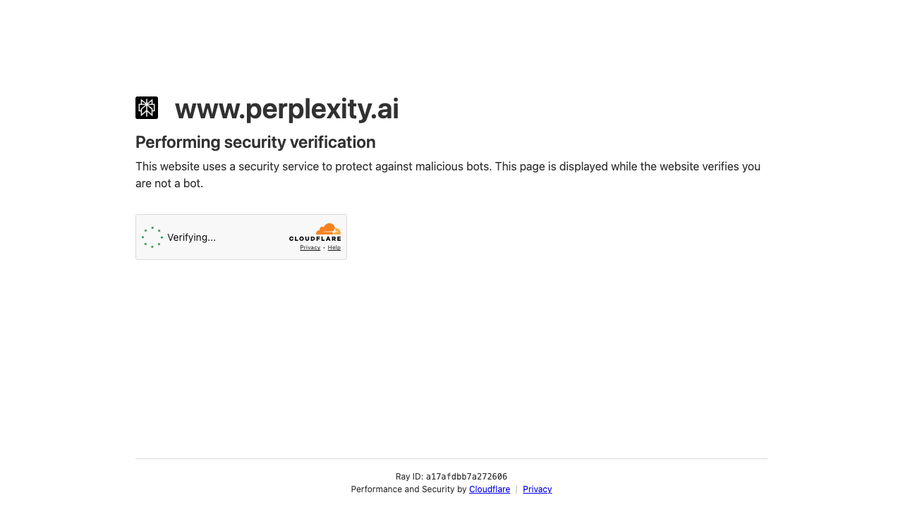
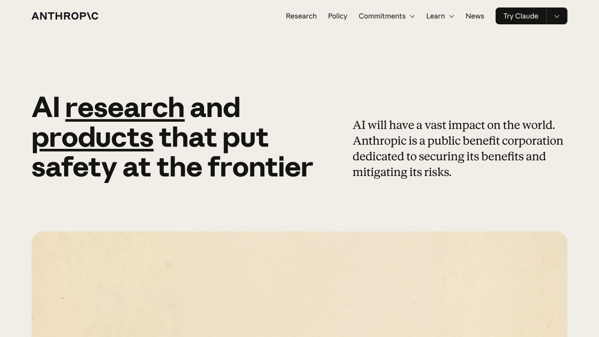

岗位名称，是AI时代最该被扔掉的东西
AI 不是在替代岗位，而是在一个一个吃掉岗位里的具体任务。真正该看的不是 title，而是每天到底在做什么、哪些任务会被 AI 拿走、还能沉淀什么不可替代的能力。
Explore / Learning
这里沉淀 AI-Native 工作理念和工作方法：既关注如何理解 AI 时代的工作变化，也关注如何把工具、流程和判断力真正落到交付里。
Category 01
讨论 AI-Native 到底改变了什么：不是工具清单，而是问题定义、能力边界、协作方式和个人经营系统的重构。
AI 不是在替代岗位，而是在一个一个吃掉岗位里的具体任务。真正该看的不是 title，而是每天到底在做什么、哪些任务会被 AI 拿走、还能沉淀什么不可替代的能力。
AI 会快速给出答案，但真正决定你是否有竞争力的，是你能不能判断这些答案的前提、逻辑和风险是否成立。AI 时代执行能力被拉平，判断力正在从职场加分项变成基本功。

真正的 AI-Native，不是把每个环节都塞进一个新工具，而是重新设计人、AI、流程之间的分工，让问题可以被更快拆开、更稳交付。
Category 02
记录可以直接迁移到真实工作的流程：如何拆问题、搭框架、调用 AI、验证质量，以及把一次经验沉淀成可复用资产。
先破掉自己的行为惯性和路径依赖，再把上下文记忆和 agent 分工用起来。AI 用得越多，越考验你能不能把任务、背景和边界拆清楚。

先把目标、约束、判断标准和交付物说清楚，再让 AI 进入研究、生成、审阅和迭代链路，避免只得到一段看似完整的回答。
一次好的实践，如果只停留在聊天记录里，很快会消失。更好的方式是把触发条件、输入格式、检查标准和输出模板固定下来。